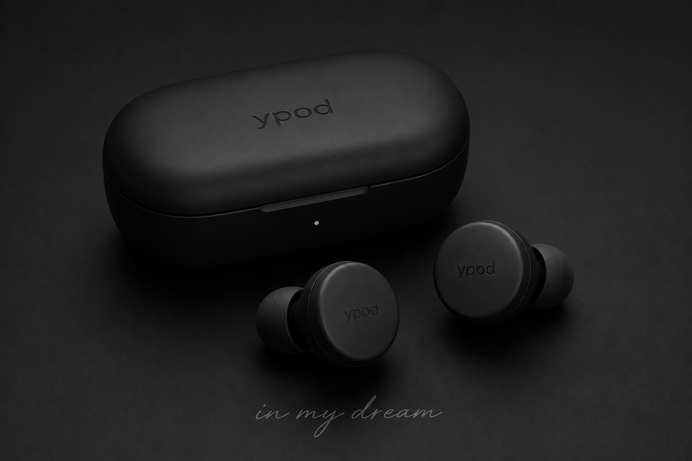
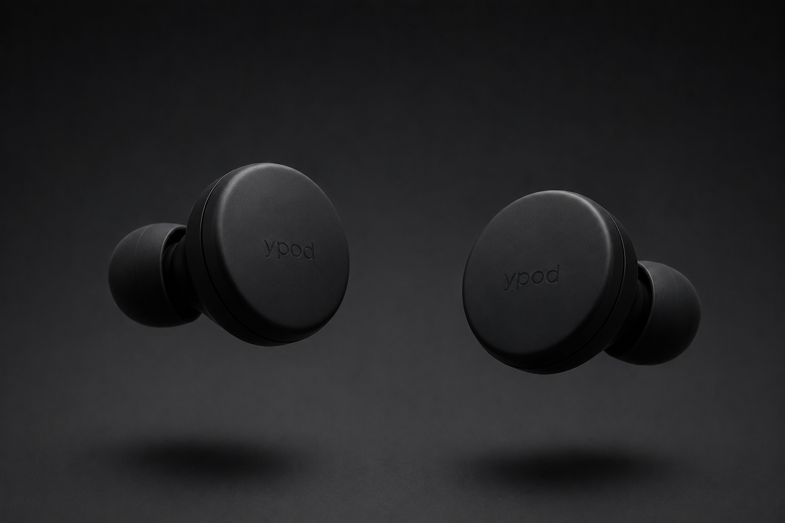
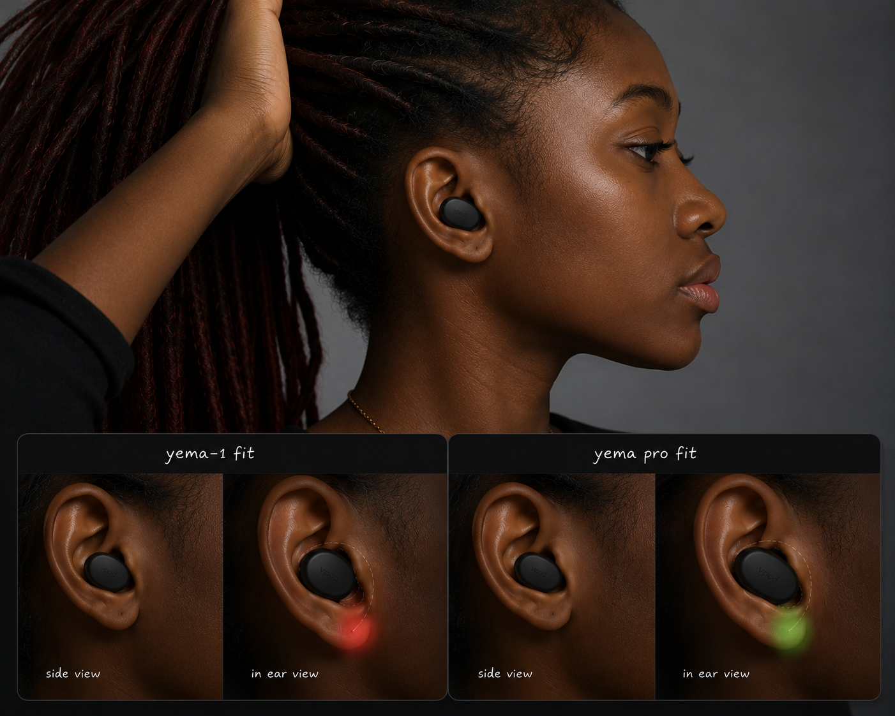
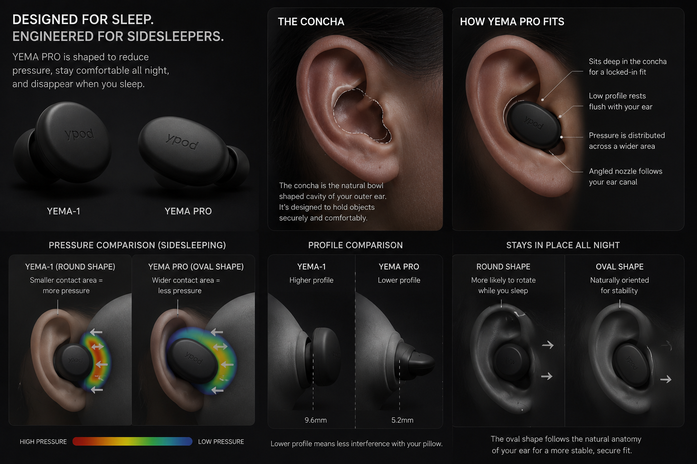

yema-1
floating object, calm surface.
Use this movement for the brand intro: matte black hardware, slow drift, no tech noise, no aggressive lighting.

yema-1
matte black bluetooth earphones for people who fall asleep with music, rain, prayer, podcasts, or silence-masking sound in their ears.
in my dream
the idea
ypod is a sleep-first earphone brand: simple, snug, low-key hardware with phone-first controls and a product language that feels quiet before it even plays a sound.
motion language
yema-1
Use this movement for the brand intro: matte black hardware, slow drift, no tech noise, no aggressive lighting.
yema pro
This belongs near fit, comfort, and side-sleeper storytelling: the product should appear soft, close, and easy to place.
pro silhouette
Keep YEMA PRO in the same black visual family while letting the oval shape signal the sleep-specific upgrade.
product family

yema-1
A clean round face, uniform thickness, soft silicone tip, matte finish, and low-contrast ypod mark. This is the core identity.

yema pro
Same quiet DNA, re-shaped into a flatter oval body that sits deeper in the concha and spreads pillow pressure across a wider area.
fit research

Side sleepers do not only need smaller earbuds. They need a profile that reduces the first point of pillow contact, stays oriented while the head moves, and avoids pressing a hard circular edge into the ear.
wear moment
The pro story is not only lower profile. It is the quiet ritual of placing one bud, letting it disappear, and leaving every control on the phone.
visual language

pitch
People use sound to sleep, but normal earbuds are built for waking hours: stems, touch panels, bulk, flashing cues, and pressure points.
ypod makes sleep-first earbuds with low-profile geometry, muted branding, soft tips, and phone-based controls that do not wake the user.
The brand owns a calm emotional space: a product made for lovers, night thinkers, light sleepers, students, travelers, and side sleepers.
Start with yema-1 as the iconic object, then use yema pro to prove ergonomic seriousness through fit studies, sleep stories, and testing.
control philosophy
No touch controls on the bud. No brushing the pillow and skipping the track. No accidental volume jump. ypod keeps interaction on the phone and keeps the earbud as calm hardware.
industrial design lock
research base
Product direction is informed by the sleep-earbud category: low-profile sleep buds, silicone fit systems, side-sleeper comfort claims, and sound masking for night routines. Final dimensions still need real anthropometric testing, foam pillow testing, and prototype wear trials.